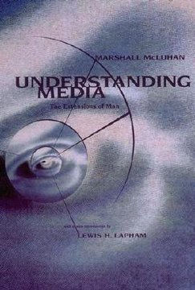
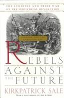
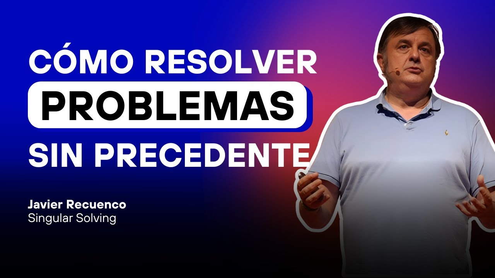
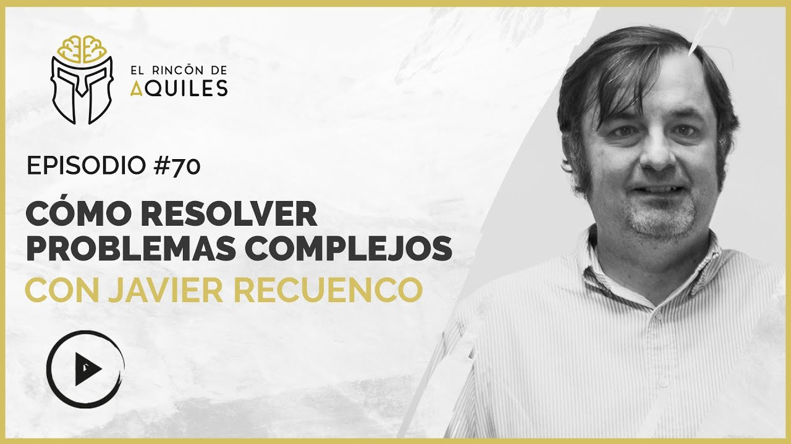

Módulo 01 / Apartado 1 de 5
Un publicista montó la primera empresa de esto
Y no sabía que lo estaba haciendo, porque la palabra no existía todavía.
San Francisco, principios de los sesenta. Howard Luck Gossage era publicista y de los buenos, aunque hoy no lo conozca casi nadie. Se le quedó fuera del panteón donde sí están Ogilvy o Bernbach, que son los nombres que salen en los libros de la profesión.
Gossage montó con un amigo médico una empresa a la que llamaron Generalists, Inc. Generalistas, Sociedad Anónima. La idea, dicha en corto: te atendemos si tu problema es de los que los especialistas no arreglan, porque lo que hace falta es alguien que mire el conjunto.
¿Por qué era rara esa idea? En esa época, y bastante hoy también, el negocio de la consultoría funciona por especialidad. Tú tienes un problema fiscal y llamas a un fiscalista. Tienes un problema de producción y llamas a un ingeniero de procesos. Cada uno sabe muchísimo de su trozo.
El pero es evidente en cuanto lo piensas: si tu problema no está limpiamente dentro de un trozo, cada especialista te va a decir que la culpa es del trozo de al lado. Y todos van a tener parte de razón.
El encargo del telesilla
Su primer cliente tenía un telesilla en Squaw Valley, una estación de esquí de California. El aparato había costado un dineral y estaba parado medio año, porque en verano nadie sube a una montaña a ver la nieve que no hay.
La pregunta que traía el cliente era la evidente: cómo lleno el telesilla en verano. Y ahí es donde la historia se pone interesante, porque ellos no contestaron a esa pregunta. Le dijeron que montase arriba un restaurante bueno, de los de ir arreglado, y que al restaurante solo se pudiera llegar en telesilla.
Se llamó High Camp y se puso de moda.
Reencuadrar es cambiar la pregunta antes de ponerse a contestarla. Si aceptas la pregunta que te traen, te quedas encerrado en las soluciones que esa pregunta permite. «Cómo lleno el telesilla» solo admite respuestas de telesilla: bajar el precio, poner publicidad, ampliar horarios.
En cuanto la pregunta pasa a ser «qué motivo le doy a alguien para subir a esa montaña en agosto», se abre un abanico entero que antes no existía. Y la respuesta ganadora ni siquiera menciona el telesilla.

El libro de esto Understanding MediaEl libro que convirtió a McLuhan en una celebridad meses después de que Gossage lo sacara de la universidad. De aquí sale «el medio es el mensaje». Denso y con frases que se te quedan clavadas. — Marshall McLuhan, 1964
El otro mérito de Gossage
Hay un segundo capítulo que explica bastante bien de qué va esta gente. En 1965, Gossage y su socio se gastaron unos seis mil dólares de su bolsillo en traerse a Marshall McLuhan a Nueva York y presentarlo fuera del mundo universitario, en comidas con gente de publicidad y de medios.
Un profesor canadiense de literatura inglesa que acabó siendo el teórico de los medios de comunicación más famoso del siglo XX. Suya es la frase «el medio es el mensaje»: la idea de que lo que más te cambia no es el contenido que consumes, sino el aparato por el que te llega. La televisión te cambia por ser televisión, independientemente de lo que echen.
Cuando Gossage se lo llevó a Nueva York, McLuhan era un señor gris de 53 años que no conocía nadie fuera de la facultad. Meses después era una celebridad internacional.
Lo que unía a los dos era una idea que hoy suena normal y entonces no lo era: que se acababa la época de los especialistas. Que el mundo se estaba poniendo demasiado enredado como para que cada uno mirase solo su parcela.
La era de los especialistas, la fragmentación del intelecto, había terminado.
Y qué es esto, según él
Hasta aquí la historia. Pero conviene oírle a él definir la disciplina, porque lo hizo en un hilo entero y la definición no se parece nada a lo que suele poner en un folleto de posgrado.
El CPS es un hijo de mil leches. Un paraguas conceptual, un patchwork de conceptos, un delta sedimentario de mil disciplinas.
Y de ahí saca una contradicción que le sirve para defenderse de los suyos: es ridículo intentar delimitar contornos y fronteras rotundas de una disciplina que proclama que la materia nueva aparece en el roce entre placas. Si tu tesis es que lo bueno pasa en las fronteras, no puedes ponerle una a tu propia disciplina.
Contra convertir esto en una secta. Lo dice con todas las letras: tiene una relación muy mala con «los defensores de la fe, el neocatecumenado, los guardianes de las esencias, los Savonarolas y los comisarios de la ortodoxia».
Y usa dos casos históricos de liderazgo intelectual que acabaron mal. Freud y Jung: se conocieron en 1907, su primera conversación duró trece horas, Freud lo nombró su sucesor en 1910 y en 1913 habían roto — porque Freud esperaba lealtad incondicional y Jung quería independencia. Ayn Rand y Nathaniel Branden: el principal divulgador de su filosofía, expulsado del círculo en 1968 por un asunto personal reconvertido en acusación de traición doctrinal.
Su lectura: los dos terminaron devorados por su personaje y acabaron gestionando su campo «con una aproximación más cultista que intelectual». Es el riesgo de cualquier disciplina que gira alrededor de una persona — y esta gira alrededor de una persona.
Por eso remata negándose el papel. Dice que el liderazgo intelectual «es una puta mierda» y que él no está para liderar nada intelectualmente, sino para llevar esto a tierra: «soy ante todo un empresario, no un mesías». Y deja una definición de liderazgo de pasada que vale más que muchos libros del módulo 6: una propiedad emergente que sale de mezclar coherencia, consistencia y riesgo.
Lo que esto significa para lo que estás leyendo. Si el CPS fuera un cuerpo cerrado, una web como esta sería una copia pirata. Como no lo es, es otra cosa. Él lo cierra así: «tomé prestado un concepto semánticamente confuso y le di unas ciertas reglas del juego, pero no me llevé el balón a casa. Todo lo que contribuya a resolver el problema es bienvenido al puchero. Me cago en la ortodoxia. Haz cosas y tráelas a la comunidad. Añade capítulos al libro».
Y el dios que le sirve de arquetipo
Hay una pieza más que conviene traer, de mayo de 2026, porque da la mejor imagen que existe de qué se supone que hace un CPSer. Y viene por un camino raro: la mitología griega, y en concreto cómo castiga a los que se salen del guion.
La lista es conocida. Ícaro vuela demasiado alto y acaba en el mar. Sísifo queda condenado a empujar la misma piedra para siempre. Prometeo le da el fuego —la tecnología— a los humanos y termina encadenado con un águila comiéndole el hígado todos los días. Desafiar el orden establecido sale caro, y esa es la moraleja que el catálogo entero repite.
Menos en un caso. Hay una anomalía en la matriz mitológica: un dios que rompe las normas, hace trampas, mira donde nadie mira, y no solo no acaba castigado sino que sale reforzado.
El primer movimiento es pensamiento lateral puro —lo que veremos en el módulo 2—. Pero fíjate en que ese primer movimiento no le salva: le pillan igual. Lo que le salva es el segundo y el tercero: fabricar algo que el otro quiera y convertirlo en una negociación.
Y ahí está la tesis, que es de las mejores del corpus. Los perfiles brillantes y asimétricos llevan décadas comportándose como Prometeo: inmolándose contra el sistema por tener razón, y perdiendo el hígado a diario en la oficina, en el colegio o en la universidad. Tienen el hardware para hacer andar las vacas hacia atrás —ver soluciones que nadie intuye— y les falta el software para construir la lira: negociar, comunicarse y manejar el contexto.
Todo este sitio, si te fijas, es software de lira. Los módulos 1 a 5 afinan el hardware; el módulo 6 es la tortuga y las tripas de oveja.
Y esto conecta con la definición más reciente que ha dado del oficio. En julio de 2026, describiendo cómo será la empresa que sobreviva a la irrupción de la IA, dijo que necesitará «un pequeño grupo de psicopompos CPS haciendo de interfaz» entre la gente muy técnica y el mundo normal. Ese hilo está aquí, y el psicopompo es exactamente Hermes.
La parte fea del oficio
Termino con algo que conviene saber pronto, porque no se dice en ningún folleto. Vender ideas es un negocio incómodo.
Cuando alguien te compra un producto, no se siente cuestionado. Cuando contrata a un pintor para su casa, tampoco: da por hecho que el pintor tiene oficio, herramientas y maña, y no le supone ninguna humillación. Pero cuando alguien te compra una idea, dentro del paquete va un reproche silencioso: a mí no se me ocurrió.
Por eso este trabajo se vende mal y por eso hay tantísima gente lista que se queda dando charlas en lugar de resolviendo cosas. Si te metes en esto, cuenta con que vas a ver esa cara bastantes veces.
Lo que hay que llevarse de este apartado
- La disciplina nace de una intuición: hay problemas que ningún especialista arregla porque el problema está entre las especialidades.
- La primera empresa que lo vendió se llamaba Generalists, Inc. y era de un publicista.
- Reencuadrar es cambiar la pregunta. En el caso del telesilla, ahí estaba todo.
- Vender ideas incomoda al que las compra. Es un rasgo del oficio, no mala suerte.
Fuentes de este apartado
Las turras de las que sale
Posterior al corte del Turrero Post. Abre seis semanas seguidas dedicadas a la educación, y por el camino deja el mito de Hermes como arquetipo del resolutor de problemas complejos y la distinción entre tener el hardware de Prometeo y necesitar el software de la lira. Es también un llamamiento abierto: pide input a jóvenes, a padres y sobre todo a docentes para calibrar un programa formativo fuera de la homologación reglada.
El CPS como mirada y como actitud vitalTurra · 44 tweets · nov 2024La definición de la disciplina hecha por él y en negativo: contra los guardianes de las esencias. Recorre las rupturas de Freud con Jung y de Ayn Rand con Branden como ejemplos de liderazgo intelectual devorado por su propio personaje, y sale de ahí con el CPS definido como un delta sedimentario de mil disciplinas, imposible de encapsular en una receta. Es el mejor sitio del corpus para entender qué se está estudiando exactamente.
Quién fue la primera persona que montó una compañía en torno al CPS47 tweets · oct 2022El hilo del que sale este apartado entero. Cuenta la historia de Gossage y Generalists Inc., el encargo del telesilla y la operación de sacar a McLuhan de la universidad. En la segunda mitad se va a algo distinto y más personal: por qué vender ideas es un negocio incómodo, y por qué poner a un corporativo al frente de una startup suele acabar mal.
El movimiento ludita y su resistencia al cambio49 tweets · mar 2023Rehabilita a los luditas apoyándose en el libro de Kirkpatrick Sale: no rompían máquinas por odio a la tecnología, sino porque les estaban imponiendo un futuro concreto que no habían elegido. De ahí salta al presente y a los oficios de cuello blanco amenazados por la IA.
Los libros que se citan ahí dentro
El libro que convirtió a McLuhan en una celebridad meses después de que Gossage lo paseara por Nueva York. Su tesis es que cada medio de comunicación te reconfigura por el hecho de ser ese medio, al margen de lo que emita. De aquí viene «el medio es el mensaje». Es denso y a ratos delirante, pero hay frases que se te quedan clavadas años.
Changing the World Is the Only Fit Work for a Grown ManSteve Harrison · 2014La biografía de Gossage, y prácticamente la única fuente decente sobre él. Recuenco avisa de que hay muy pocos libros buenos sobre este hombre y de que son difíciles de conseguir. Sirve tanto para la parte de publicidad como para entender de dónde le venía la manía de mirar los problemas enteros.

Rebels Against the FutureKirkpatrick Sale · 1995La historia de los luditas contada sin la caricatura habitual. Sale sostiene que eran obreros textiles cualificados peleando por su propia idea de futuro, basada en la comunidad y el oficio, y no un puñado de brutos con miedo a las máquinas. Publicado en 1995, justo cuando empezaba la era digital, y ha envejecido inquietantemente bien.
Para ver

¿Qué es el Complex Problem Solving?Product Hackers · con Alex GranadosLa entrevista más directa para empezar. Recuenco explica en lenguaje llano de qué va la disciplina, de dónde sale y a qué se dedica su empresa, sin las digresiones de las turras. Si solo vas a ver un vídeo antes de seguir con el curso, este.

Aceptar la ignorancia para resolver problemas complejosEl Rincón de Aquiles #70 · 1 h 09Conversación larga de 2021, con índice temático en las notas del episodio. Es donde mejor cuenta la parte incómoda del oficio: que hay que ser funcional sintiéndote incompetente, y que el cliente lee esa inseguridad honesta como falta de pericia.